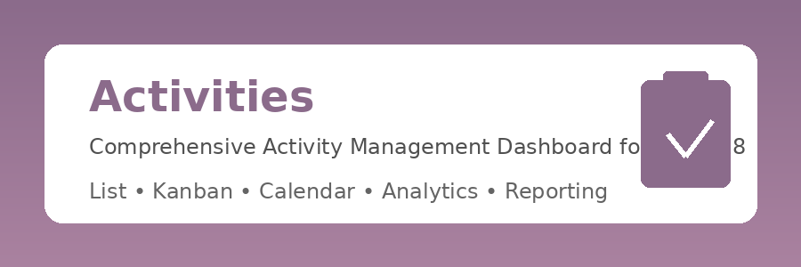

📋 Activities
Comprehensive Activity Management Dashboard for Odoo 18
Transform how you manage activities across your organization with this powerful dashboard module. Track, manage, and analyze all activities in one centralized location.
🚀 Key Benefits
- Centralized Management - All activities in one dashboard
- Multiple Views - List, Kanban, Calendar, and more
- Smart Filtering - Find what matters quickly
- Powerful Analytics - Gain insights with reporting tools
- Team Collaboration - Track team workload efficiently
✨ Features
📋
List View
Quick scanning and bulk actions on activities
📊
Kanban Board
Visual workflow management by activity type
📅
Calendar View
Time-based planning and scheduling
📈
Analytics
Graph and Pivot reports for insights
🔍
Smart Filters
My Activities, Overdue, Today, Planned
⚙️
Configurable
Custom activity types and settings
📖 Tutorial Guide
Getting Started
Installation
1
Navigate to Apps in your Odoo instance
2
Search for "Activities"
4
Once installed, the app will appear in your main menu
Quick Access Menu
The Quick Access menu provides instant access to your most important activity views:
| Menu Item |
Description |
| My Activities |
Shows all activities assigned to you (default view) |
| Overdue |
Lists all activities past their deadline |
| Today |
Shows activities due today |
Available Views
| View |
Best For |
| List |
Quick scanning and bulk actions |
| Kanban |
Visual workflow management |
| Calendar |
Time-based planning |
| Form |
Detailed activity information |
| Pivot |
Data analysis |
| Graph |
Visual reporting |
Activity Status Colors
Activities are color-coded for quick identification:
- Overdue - Past deadline, requires immediate attention
- Today - Due today, prioritize these
- Planned - Scheduled for the future
Creating an Activity
1
Click the Create button
2
Fill in the required fields:
- Activity Type - Select from available types
- Summary - Brief description
- Assigned To - Select a user
- Deadline - Set the due date
3
Add optional notes in the Notes tab
📊 Reporting & Analytics
The Reporting menu provides powerful analytics tools:
Graph View
- Bar charts showing activities by type and user
- Visual representation of workload distribution
- Identify bottlenecks at a glance
Pivot Table
- Cross-tabulate activities by multiple dimensions
- Analyze by user, type, status, and time period
- Export data to Excel/CSV for further analysis
Available Filters
| Filter |
Description |
| My Activities |
Filter to only your assignments |
| Overdue |
Show past-due items |
| Today |
Today's activities |
| Planned |
Future activities |
| This Week |
Current week |
| This Month |
Current month |
⚙️ Configuration
Activity Types
Access via Configuration → Activity Types
Activity types define the categories of activities available in your system:
| Field |
Description |
| Name |
Display name of the activity type |
| Category |
Default, Meeting, or Phone Call |
| Icon |
Visual identifier |
| Default User |
Auto-assigned user |
| Delay |
Default deadline offset |
| Decoration |
Color styling |
Creating Custom Activity Types
1
Go to Configuration → Activity Types
3
Configure the activity type:
- Set a descriptive name
- Choose the category
- Define default scheduling (delay days)
- Select an icon
💡 Tips & Best Practices
Daily Workflow
Start your day by checking the "Today" view for immediate priorities, then review "Overdue" for catch-up items.
Morning Review
- Check "Today" view for immediate priorities
- Review "Overdue" for catch-up items
Throughout the Day
- Mark activities as done when completed
- Create follow-up activities as needed
End of Day
- Review tomorrow's planned activities
- Reschedule if necessary
Team Management
- Use the Reporting view to monitor team workload
- Filter by user to check individual performance
- Identify overdue patterns to address bottlenecks
Efficiency Tips
Use keyboard shortcuts: Press Alt + Q to quickly search and Ctrl + K for command palette.
- Leverage filters - Save frequently used filter combinations
- Create custom search presets
- Sync with external calendars for reminders
🔐 Security & Access Rights
| Group |
Permissions |
| User |
View, create, edit, delete own activities |
| Manager |
Full access + Activity Types configuration |
📞 Support
For technical support or feature requests, please contact:
The Odoo Experts
Website: www.theodooexperts.com